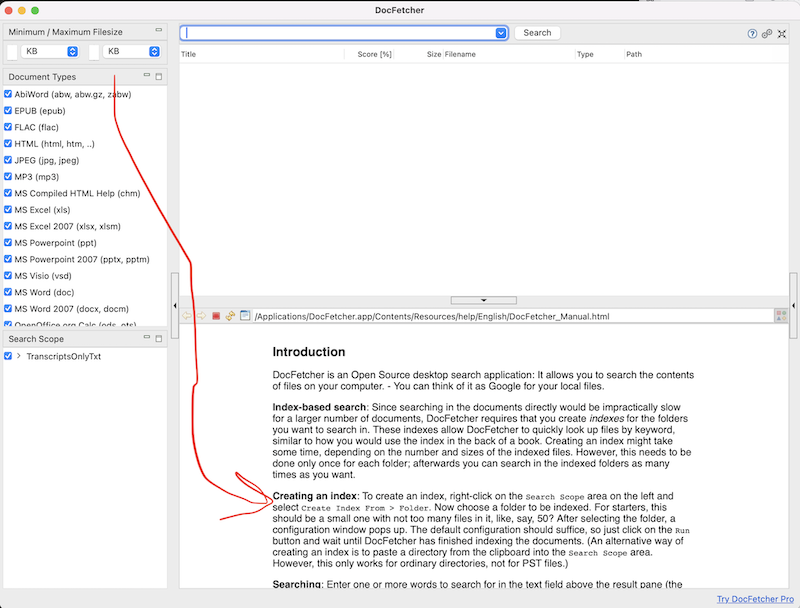
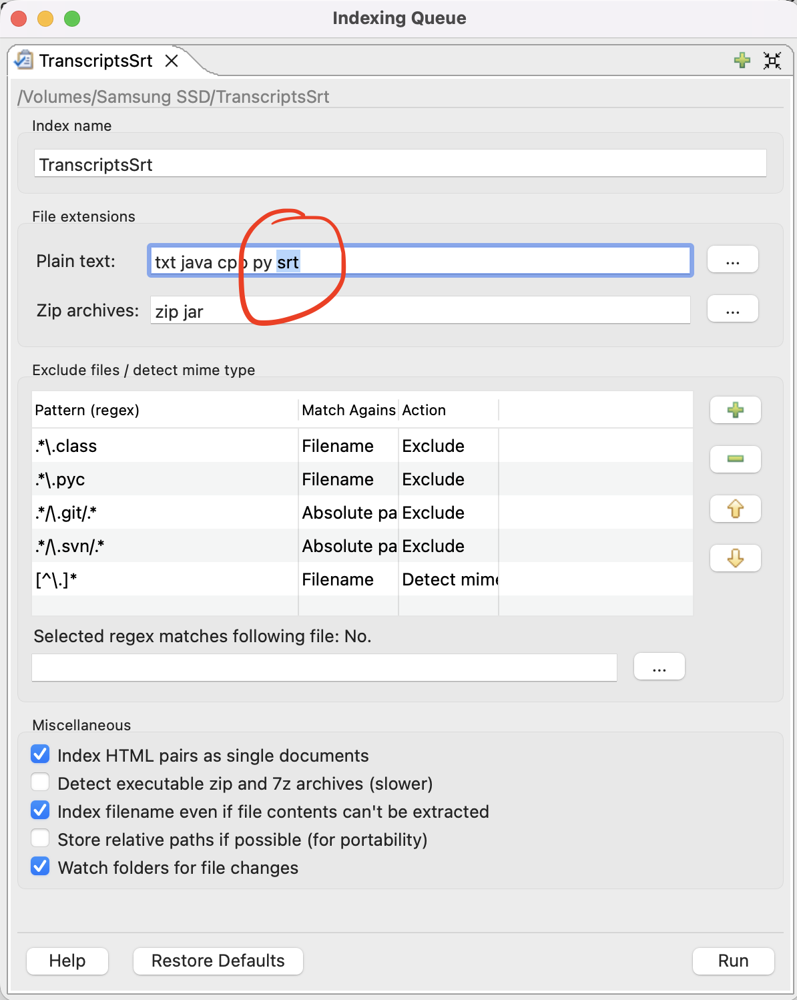
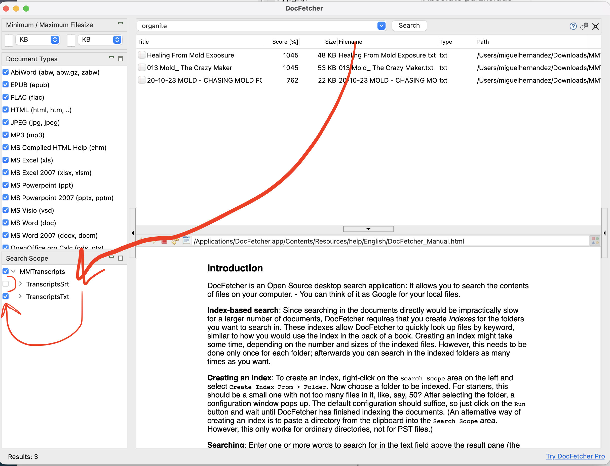
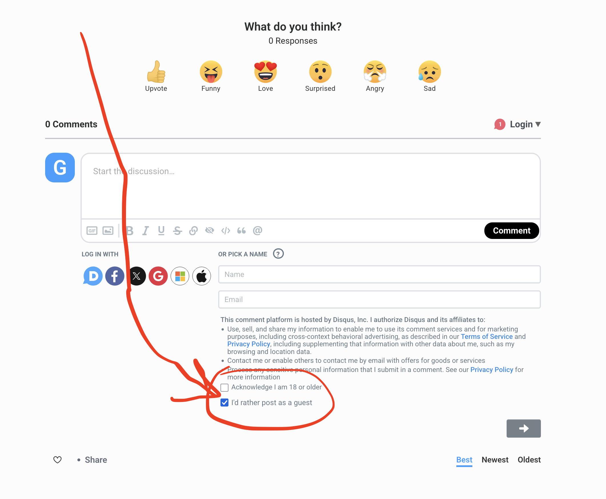

I transcribed 1,828 Medical Medium videos/audios using Open AI's Whisper
In this blog post, I will give an introduction to this Medical Medium transcription project, along with related context. Then, I will walk you through the setup instructions, which will reference the download links. If you run into any issues or have any questions/comments, I encourage you to leave a comment below on the Disqus plugin, or email me at mh212@proton.me
Note: If I ever make updates to the transcript files, I will update this blog post here in the Change log section. The Download link section will be updated before updating the blog post. So, if you downloaded the transcripts prior to the change log update, make sure to download the latest files and re-index your search tool.
Change log
9/21/26 10:32 PM PST
Added two video transcripts:
- Transcript from this interview with Medical Medium and Aaron Alexander: https://www.youtube.com/watch?v=4RILWmr2jm0
- Path: Interviews/9-18-26 - Aaron Alexander Interview with Medical Medium - Urgent Message for Humanity
- Transcript from AW's latest live Healing Weapons For Anxiety, Depression, Sleep, Restless Legs And Nerves: https://www.youtube.com/watch?v=9_Ctco9E79g
- Path: Facebook & Youtube/Livestreams/2026/9-21-26 - Healing Weapons For Anxiety, Depression, Sleep, Restless Legs And Nerves
Medical Medium Transcription Project
I have transcribed 1828 Medical Medium videos/audios. This includes YouTube videos/lives, livestreams on other platforms, telegram audios, podcast audios, interviews, lost and removed radio shows, MM events, newsletter videos, tik tok, the healing path, and more. You'll find the setup steps under the Setup Instructions section below, which will reference the Download Links section in step 1. But first, some stats and a little more info.
Here are some stats
- transcribed 1828 out of 1828 videos/audios. (100.0%)
- hours of video/audio content: ~ 1322.9 hours
- total time taken to transcribe: ~ 32.51 hours
I did not transcribe manually. I wrote a small program to transcribe all the videos/audios using OpenAI's Whisper. I used the turbo model.
Here is a link to the Python script I wrote to transcribe all videos/audios from my archive: https://gist.github.com/miguelHx/64a2ee8d1d9189e6d55e168633f706cd.
I know, using AI is not ideal compared to human transcription. But I believe it's a good enough approximation. After some spot checking, it seems to be 85-95% accurate for most files, which is good enough for my purposes. Some files had issues due to background noise or song intros. Had to tweak the transcribe command a bit to drastically reduce hallucinations.
If you spot any problems, please contact me through email (mh212@proton.me) and I will look into getting it fixed asap.
I think a human transcription effort can be crowdsourced, but that will take a lot more effort to set up. If there is a big demand for that, maybe I can work on setting that up. But for now, using an AI transcription is a good-enough working solution.
Note: There are a few typos, for example, the transcripts have "organite" instead of "orgonite", and "vimrigy" instead of "vimergy". So, if you can't find a specific term, try searching variations of it, or try to find unique words/phrases that might be near it.
Depending on which file search tool you use, you can also try fuzzy search functionality. I've been using this open source tool called DocFetcher. I like it so far. For DocFetcher, you can enter orgonite~ or vimergy~ into the search bar to activate fuzzy search, which will pick up typos. More info on search options below.
Another potentially useful search option you can use is to pre-fix the search with filename:. For example, filename:<file_name_to_search_for>.
Here is a review article with more info on DocFetcher, including info about it's search query language.
If you decide to use this tool, make sure to follow the instructions for creating an index to search on. See instructions with screenshots below. You can create multiple indexes.
But it looks like from one index, you can expand the folder hierarchy, and check/uncheck folders to be included/excluded from the search space. This can be useful to do if, for example, you want to search only telegram message audio transcripts, or only the podcast transcripts.
Setup Instructions
- Make sure to download the zip files. There is one download link, but once you unzip the file, there should only be two folders.
TranscriptsTxt, andTranscriptsSrt. After unzipping, each file will have a sub-folder hierarchy with many transcript files. Scroll down to Download Links section below to download the files.- Once downloaded, unzip/extract first. Most operating systems have built-in tools to do this usually by double clicking the .zip file or right clicking then selecting "unzip" or "extract all". Note: If you run into issues using Windows built-in extraction tool, like pad is too long error, consider using a 3rd party unzipping tool like 7-zip instead. But if you don't want to download a 3rd party unzipping software, you can try moving the MMTranscripts.zip file to an upper path, like at C: and then unzip it there. That way, the full file paths are shorter, and you are less likely to run into the "pad is too long" error. After unzipping, you can then move the unzipped folder to Documents or wherever you wish.
- Then move to your documents folder or wherever you want to put them. I recommend putting them in
Documentsfolder inside a newly createdMedicalMediumTranscriptsfolder or related naming.
- Download a file search tool. I recommend DocFetcher. It's open source and works well.
- Go ahead and read through the overview page to get an idea of what it is and how it works.
- Then, go to the downloads tab on their website and choose the download link based on your hardware or operating system. I chose the non-portable version. The overview page gives more info about portable vs. non-portable towards the bottom.
- After downloading, run the search tool installer, which is usually found in your
Downloadsfolder. - Open the tool and follow the instructions to set up an index. Make sure the .zip file you downloaded from step 1. is unzipped/extracted. If you're using DocFetcher, follow the instructions from this screenshot (but of course, read everything else too, not just where the arrow points):

5. Select either one of theTranscriptsTxt or TranscriptsSrt folders. Choose one only in the beginning, say TranscriptsTxt and run test searches on it. Then, you can create a new index on TranscriptsSrt after, if you want. See below for specific extra step when creating index on SRT files !
- After you create the index, you'll see it under the search scope on the left bottom window. Then, you can search for keywords at the top search bar. If you have two indexes, one for
TranscriptsTxtand one forTranscriptsSrt, make sure to have only one check-boxed at a time when performing searches. Otherwise, you'll get duplicate results.
Extra Step for SRT files:
When creating an index on SRT files, you'll need to add srt to the Plain Text field. See screenshot:

Then click run, and you'll be able to run searches and have results with timestamps.
There are a few people who indexed on the parent folder MMTranscripts, instead of creating separate indexes on TranscriptsTxt and TranscriptsSrt. That's okay too. If you do it this way, make sure to still add srt to Plain text field like the screenshot above when indexing. Also make sure to have only one of the two Transcripts folders checkboxed, to avoid duplicate search results. See screenshot:

Download Link
Download Transcripts
This is a ZIP archive containing two folders:
TranscriptsTxt- transcripts without timestampsTranscriptsSrt- transcripts with timestamps
Make sure to create separate search indexes for each folder.
File: MMTranscripts.zip
Size: ~ 60.8 MB
Format: ZIP containing TXT and SRT files
Download MM transcripts here: https://downloads.miguelhx.com/MMTranscripts.zip
Feel free to leave a comment/reaction below, if you want
If you found this useful, please consider leaving a comment and/or reaction in the Disqus below :) Also, if you run into any issues or have any questions, you can leave a comment below or email me at mh212@proton.me
If you don't want to create an account in order to leave a comment below, you can select the option "I'd rather post as a guest" at the bottom of the "Or sign-up with Disqus" section, which only shows name field at first, but the other fields will appear when you click comment after clicking in the comment text box, or when you click into the name field. See screenshot below:
